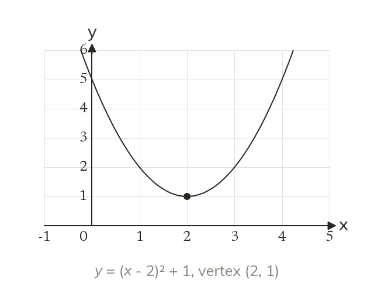

The vertex form
In a(x - h)² + k, the vertex is (h, k). The line of symmetry is x = h. The bracket shifts the graph right by h.
When a quadratic is written as a(x - h)² + k, its vertex is at (h, k) and its line of symmetry is x = h. The bracket shifts the graph right by h, and k shifts it up.